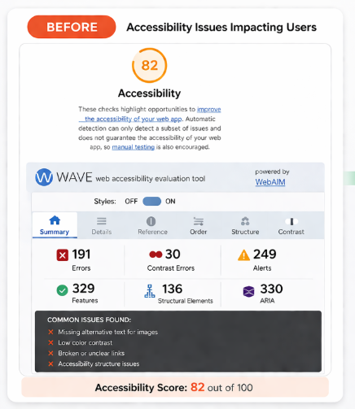
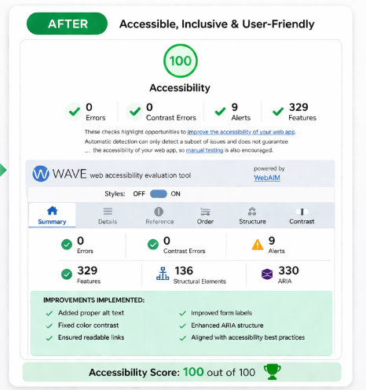

Website Accessibility Audits (WCAG Compliance)
Manual and tool-assisted audits for websites and web applications with clear issue prioritization.
I help businesses find and fix accessibility issues so they can avoid legal risk, improve usability, and pass WCAG audits without confusion.
Get Free Accessibility AuditI’ll personally review your website and send a report within 24 hours.
Send me your website URL and I’ll identify accessibility issues affecting usability, compliance, and user experience.
Request Free AuditFrom manual accessibility audits to hands-on remediation, I help teams fix real usability barriers instead of delivering generic reports only.
See ServicesManual and tool-assisted audits for websites and web applications with clear issue prioritization.
Accessibility remediation support for businesses that need better compliance and a more inclusive user experience.
Document remediation for tagged PDFs, reading order issues, form fields, headings, and screen reader usability.
My website accessibility audit service helps businesses identify WCAG compliance issues, fix ADA accessibility problems, and improve usability across websites, web apps, and PDFs.
My website accessibility audit service focuses on WCAG compliance fixes, ADA website compliance improvements, and PDF accessibility remediation for businesses.
Businesses usually need an accessibility specialist who can explain issues clearly, work with developers or designers, and help move fixes forward quickly. My focus is practical accessibility work that improves both compliance readiness and user experience.
If your audience includes users in the United States, accessibility issues can affect usability, conversions, and legal risk. That is why I focus on accessibility audits and remediation work that supports US-facing teams.
Scan your website and get a detailed accessibility report within 24 hours.
Get Started
Missing labels, poor contrast, and screen reader usability issues.

Improved accessibility, WCAG compliance, better navigation, and screen reader support.
A practical report designed to help you understand the issues quickly and move into remediation with confidence.
Clear issue breakdown so you can prioritize critical, serious, and moderate accessibility barriers first.
Actionable recommendations written to help developers and site owners implement changes faster.
Visual proof of issues so your team can understand where the problem appears and why it matters.
A focused checklist to track fixes, improve accountability, and move your site toward better compliance.
Accessibility Insights
Fresh accessibility articles can now be loaded automatically from your blog data file.
Yes. I support businesses serving users in the United States and can work remotely on audits, remediation, and PDF accessibility projects.
No. I can help identify accessibility issues and also support the remediation work needed to fix them.
Websites, web apps, landing pages, components, forms, and PDFs.
Send your website and I’ll show you exactly what accessibility issues need to be fixed.
Request Free Audit